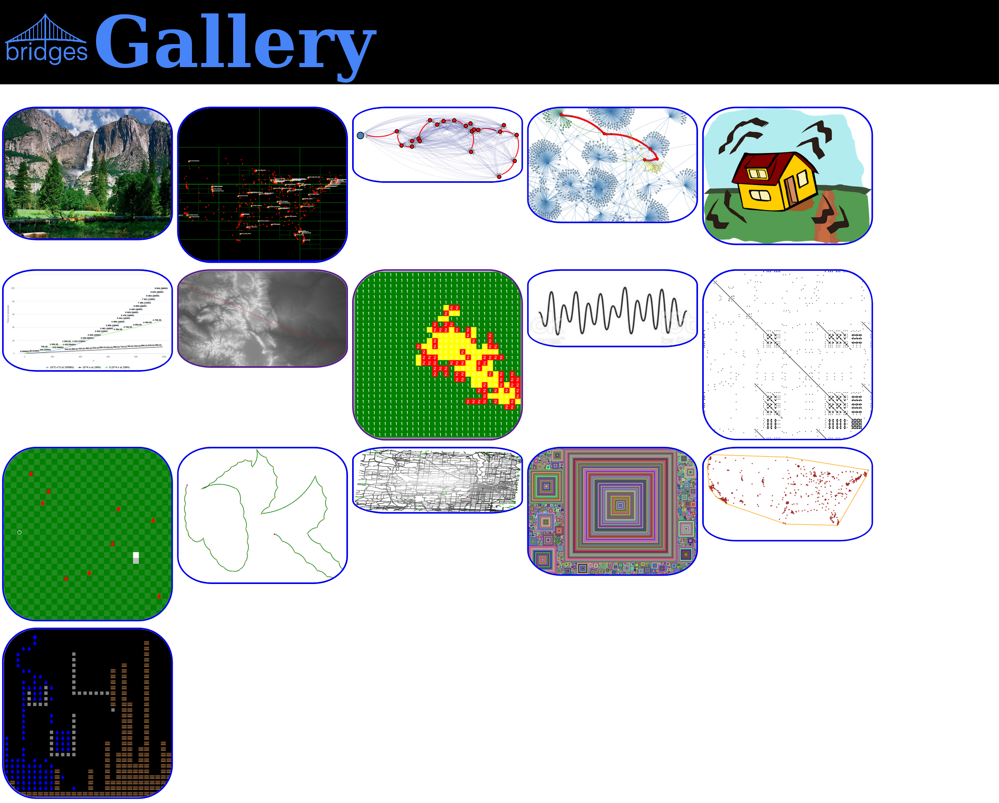

Summer 2024 Training Workshop: Real World Data, Visualizations and Engaging Assignments Using BRIDGES
Are you looking for new ways to spice up your CS1, CS2, Data Structures, or Algorithm
Analysis course? Come to our BRIDGES training workshops at UNC Charlotte this summer!
BRIDGES provides a toolkit that lets you easily bring in interesting and engaging
real-world data into your course assignments, and allows your students to build
simple games, create data structure visualizations, and assess algorithm
performance. BRIDGES can show the relevance of computing in these early
foundational courses by connecting it with real-world problems and scenarios. See the following images (which are examples of BRIDGES program outputs)
and links to more detailed information on BRIDGES

What you will learn and do during the workshop
The workshop will introduce to the BRIDGES software toolkit, its API and
example tutorials, and programs using a variety of datasets. These will
span learning outcomes across CS1, CS2, Data Structures and Algorithm Analysis.
The organizers will assist you in building assignments for your class; the
goal will be to build 3 complete assignments that are ready to be used in
your course in the upcoming semesters. You will also be able to share
your ideas and feedback on your course, challenges you face with other
participants during the workshop.
Links for more information on BRIDGES and Interactive Examples
We will conduct a BRIDGES Training Workshop during the Summer of 2024. The 2.5 day
workshop will enable participants to learn about current practices in course
design, assessment of their current course, and enable revising their course to
integrate BRIDGES into their curriculum. At the end of the workshop, the revised
course is expected to ready for delivery in the Fall semester.
Location, Stipends
The June workshop will be conducted at UNC Charlotte, NC.
Participants will be supported by stipends to cover their travel
expenses and time.